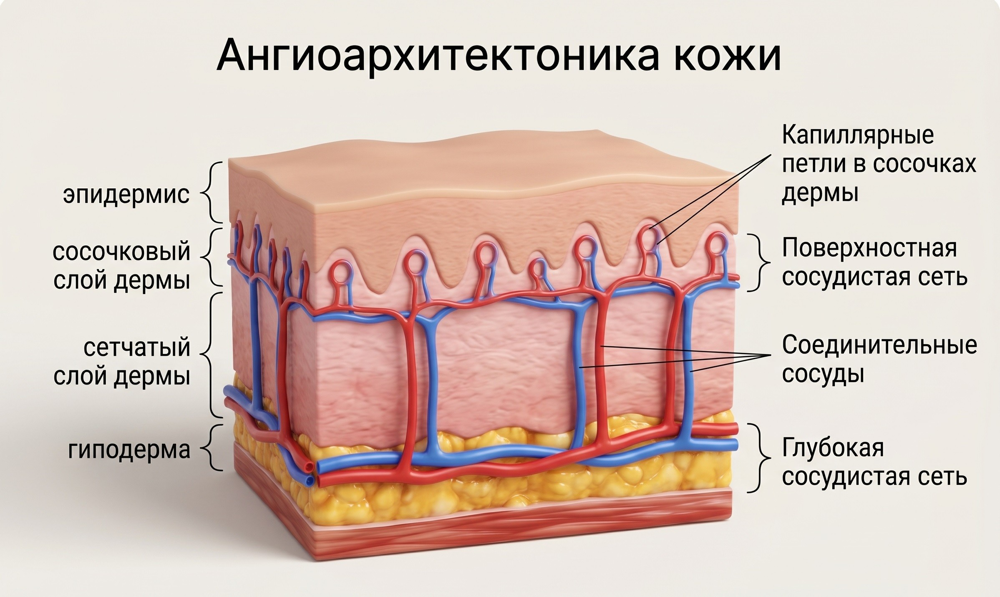

Кожа как орган: слои, обновление и защитный барьер
Кожа защищает организм от потери воды, механических повреждений, микроорганизмов и ультрафиолетового излучения, участвует в терморегуляции и восприятии ощущений. Различия между эпидермисом, дермой и подкожной клетчаткой помогают понять возможности наружного ухода и ограничения косметологических процедур.
Ключевые тезисы (Главное)
- Кожа в строгом анатомическом смысле включает эпидермис и дерму; расположенная под ними гиподерма функционально связана с кожей и часто рассматривается вместе с ней.
- Эпидермис не содержит кровеносных сосудов, но в него заходят свободные чувствительные нервные окончания. Питательные вещества поступают из сосудов дермы путём диффузии.
- Пять слоёв эпидермиса различимы в толстой коже ладоней и подошв; на лице отдельного блестящего слоя нет. Срок обновления не одинаков у всех людей.
- Наружные средства различаются по проникающей способности. Увлажняющий крем не восполняет глубокий объём, однако утверждение, что любые наружные препараты действуют только на неживые клетки, неверно.
Анатомия: разные ткани и разные задачи
Площадь кожного покрова взрослого человека обычно составляет около 1,5–2 м² и зависит от размеров тела. Помимо барьерной функции, кожа участвует в иммунном надзоре, синтезе витамина D, теплообмене и передаче сенсорных сигналов. Подкожная жировая ткань обеспечивает энергетическое депо и выделяет биологически активные вещества.
| Уровень | Основные структуры | Функциональное значение |
|---|---|---|
| Эпидермис | Кератиноциты, меланоциты, клетки Лангерганса и Меркеля | Защита от потери воды и внешних воздействий, пигментация, иммунные и сенсорные функции |
| Дерма | Коллагеновые и эластические волокна, фибробласты, сосуды, нервы, придатки кожи | Прочность, растяжимость, питание эпидермиса, терморегуляция |
| Гиподерма | Адипоциты в жировых дольках, соединительнотканные перегородки, сосуды и нервы | Амортизация, теплоизоляция, объём и подвижность мягких тканей |
Эмбриональное происхождение
Эпидермальные кератиноциты происходят из поверхностной эктодермы — наружного зародышевого листка. Значительная часть дермы развивается из мезодермы, однако соединительные ткани ряда областей лица имеют вклад клеток нервного гребня. Меланоциты также происходят из нервного гребня, а клетки Лангерганса относятся к иммунной линии. Поэтому все клетки одного слоя нельзя приписывать единственному эмбриональному источнику.
Эпидермис: пять уровней и клеточное обновление
Эпидермис — многослойный плоский ороговевающий эпителий. Большинство его клеток составляют кератиноциты: по мере созревания они перемещаются к поверхности и превращаются в корнеоциты — плоские клетки рогового слоя без ядра.
| Слой, снизу вверх | Клеточные процессы и особенности |
|---|---|
| Базальный | Деление клеток-предшественников; присутствие меланоцитов и клеток Меркеля, связанных с осязанием |
| Шиповатый | Укрепление межклеточных контактов — десмосом; клетки Лангерганса преимущественно располагаются в надбазальных отделах |
| Зернистый | Накопление кератогиалина; выделение липидов из ламеллярных телец и формирование барьерных структур |
| Блестящий | Отдельно различим преимущественно в толстой коже ладоней и подошв; на лице отсутствует |
| Роговой | Корнеоциты, окружённые липидами; постепенное разрушение связей между чешуйками и их слущивание |
Почему «28 дней» — не универсальный срок
Клеточное деление, созревание, перемещение и слущивание представляют связанные, но разные процессы. Число 28 дней используется как учебное приближение, а не как индивидуальный календарь: скорость зависит от возраста, участка тела, состояния барьера и заболеваний. По внешнему виду кожи невозможно точно установить дату образования её поверхностных клеток.
Как устроен барьер
Корнеоциты образуют прочные «кирпичи», а межклеточные липиды — церамиды, холестерин и свободные жирные кислоты — заполняют промежутки между ними. Натуральный увлажняющий фактор внутри корнеоцитов удерживает воду. Нарушение этой системы увеличивает трансэпидермальную потерю воды — испарение через кожу — и может сопровождаться сухостью, жжением и раздражением.
Что могут наружные средства
Роговой слой ограничивает, но не исключает проникновение веществ. Оно зависит от размера и растворимости молекулы, её концентрации, состава основы и состояния кожи. Липосомы и другие системы доставки не гарантируют попадания любого ингредиента в заданный глубокий слой.
| Группа средств | Реалистичная задача | Ограничение |
|---|---|---|
| Эмоленты и увлажнители | Поддержка барьера, уменьшение сухости, временное сглаживание мелкого рельефа | Не восполняют утраченные жировые пакеты и костную опору |
| Солнцезащитные средства | Уменьшение воздействия УФ-излучения при правильном применении | Не устраняют уже сформированный птоз |
| Наружные ретиноиды | Регуляция обновления; для третиноина показано влияние на признаки фотостарения и маркеры синтеза проколлагена | Требуют времени, оценки переносимости и учёта противопоказаний |
| Средства с гиалуроновой кислотой | Преимущественно увлажнение и поверхностное плёнкообразование | Эффект не равнозначен введению филлера |
Данные рандомизированного исследования наружного третиноина опровергают абсолютный запрет на влияние наружных препаратов на дермальный матрикс. Они не означают, что любой косметический крем обладает тем же действием. 1
Дерма: прочный каркас и питание
| Этаж дермы | Строение | Основные функции |
|---|---|---|
| Сосочковый | Более рыхлая соединительная ткань, тонкие волокна, капиллярные петли, чувствительные структуры | Обмен с эпидермисом и связь между слоями |
| Сетчатый | Плотная неоформленная соединительная ткань с более толстыми пучками коллагена и эластической сетью | Механическая прочность и устойчивость к нагрузке |
Коллаген преимущественно сопротивляется растяжению, а эластические волокна помогают ткани возвращаться к исходной форме. Внеклеточный матрикс — среда между клетками — включает также гиалуроновую кислоту, протеогликаны и гликопротеины. Его состояние определяется не только количеством воды, но и организацией волокон.
Фибробласты производят и перестраивают матрикс в обоих слоях дермы; эти популяции неоднородны. Эндотелиоциты выстилают сосуды. Макрофаги удаляют повреждённые структуры, тучные клетки и лимфоциты участвуют в иммунных реакциях. Кожные механорецепторы и свободные окончания распределены по разной глубине: тельца Мейснера характерны для сосочков безволосой кожи, а тельца Пачини располагаются глубже. 2
Гиподерма: жировые компартменты и перегородки
Жировые клетки — адипоциты — объединены в дольки, разделённые соединительнотканными септами. На лице различают поверхностные и глубокие жировые компартменты, отделённые фасциальными и мышечно-апоневротическими структурами. Единой обязательной схемы из трёх жировых слоёв для всех участков лица нет.
Контуры зависят от совместного состояния кожи, жировых пакетов, связок, мышц и костной опоры. Поэтому уменьшение чёткости овала нельзя объяснить только ослаблением септ.

- Периорбитальная область (веки) — очень тонкая кожа; подкожный жир собственно век обычно отсутствует. Орбитальный жир — отдельная структура.
- Скуловая и щёчная область — поверхностные и глубокие жировые компартменты участвуют в формировании объёма.
- Свод черепа и лоб — послойная система кожи, клетчатки и апоневроза; толщина и фиксация неодинаковы.
Кровоснабжение: два сосудистых контура

Глубокое сосудистое сплетение расположено у границы дермы и подкожной клетчатки. От него отходят соединительные сосуды к более поверхностной сети; капиллярные петли входят в сосочки дермы. Эпидермис получает кислород и питательные вещества диффузией, без собственных кровеносных сосудов.
Кровоток участвует в терморегуляции и влияет на цвет кожи. Лимфатические сосуды обеспечивают отток тканевой жидкости. Волосы и железы имеют собственные анатомические связи с сосудами и нервами: их распределение также важно для реакции тканей на вмешательство.
Точечное кровотечение означает повреждение сосуда, но не позволяет надёжно определить глубину иглы или подтвердить безопасность инъекции.
Практический смысл: задача важнее обещания глубины
| Задача | Основной уровень оценки | Возможные подходы и ограничения |
|---|---|---|
| Сухость и нарушение барьера | Роговой слой и эпидермис | Уход, устранение раздражителей, лечение дерматоза при его наличии |
| Пигментация и фотоповреждение | Эпидермис и, при некоторых изменениях, дерма | Фотозащита, наружная терапия; аппаратные методы только после диагноза |
| Изменение текстуры и плотности | Дерма | Наружные лекарственные средства и процедурные методы по показаниям; выраженный лифтинг не гарантирован |
| Потеря объёма и смещение тканей | Жировые компартменты, связки, костная опора | Индивидуальная оценка; инъекционные или хирургические подходы имеют разные возможности и риски |
Глубина воздействия определяется не абстрактным «слоем омоложения», а диагнозом, устройством аппарата, зарегистрированными показаниями препарата и топографией конкретной зоны. Домашний уход остаётся частью лечения, а не противоположностью процедур.
Реабилитация: норма и тревожные сигналы
Нормальная реакция зависит от конкретного вмешательства. Отсутствие симптома в таблице не исключает осложнение.
| Физиологическая норма | Повод сразу обратиться к врачу |
|---|---|
| Умеренное покраснение и чувствительность, уменьшающиеся в ожидаемые для процедуры сроки | Усиливающаяся или несоразмерная боль, распространение красноты, горячая кожа, гнойные выделения |
| Небольшой локальный синяк после инъекции | Побледнение, сетчатый синюшный рисунок или холодный участок кожи, особенно после филлера |
| Ограниченный отёк с постепенным улучшением | Быстро нарастающий отёк; отёк языка или горла и затруднение дыхания требуют экстренной помощи |
| Отсутствие изменений зрения и общего неврологического состояния | Внезапное нарушение зрения, слабость, перекос лица или нарушение речи после инъекции — повод немедленно вызвать экстренную помощь |
После вмешательства требуется письменный план ухода от врача. Обычно он включает мягкое очищение, назначенное увлажнение и фотозащиту; кислоты, скрабы и ретиноиды временно исключаются при повреждённом барьере. Массаж и прогревание без назначения не проводятся. При признаках нарушения кровоснабжения нельзя ждать несколько дней или пытаться исправить состояние самостоятельно. 3
Частые вопросы пациентов (FAQ)
Правда ли, что в эпидермисе нет нервов?
Нет. В нём нет кровеносных сосудов, но присутствуют свободные нервные окончания, участвующие в восприятии боли и зуда. С клетками Меркеля связаны структуры тонкого осязания.
Может ли крем улучшить состояние дермы?
Это зависит от действующего вещества. Для наружного третиноина имеются клинические данные о влиянии на фотостарение и синтез проколлагена; переносить этот результат на любую сыворотку нельзя. Глубокий дефицит объёма наружные средства не восполняют. 1
Всегда ли кожа полностью обновляется за 28 дней?
Нет. Это ориентировочное учебное число, а не точный срок для любого возраста и участка тела. Заболевания и повреждение барьера могут существенно менять клеточную динамику.
Почему для век и щёк выбираются разные методики?
Различаются толщина кожи, сосудистая анатомия, расположение мышц и жировых пакетов. Допустимые препараты, параметры аппарата и глубина введения оцениваются отдельно для каждой зоны.
Источники
- 1 Kang S. и соавт. Рандомизированное двухлетнее исследование третиноина 0,05% при фотоповреждении кожи.
- 2 Исследование различий фибробластов сосочковой, сетчатой дермы и дермально-гиподермального перехода.
- 3 FDA. Dermal Fillers (Soft Tissue Fillers): риски и признаки осложнений.
Материал носит информационно-образовательный характер и не заменяет очную консультацию врача-косметолога. Процедуры подбираются индивидуально после диагностики.